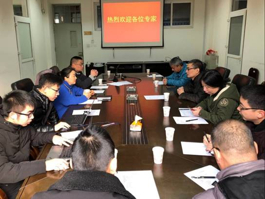
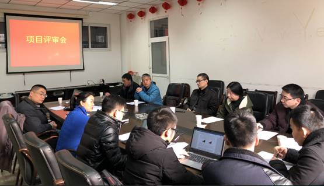

与中国空气动力研究与发展中心共谋学科方向发展思路
为进一步推动气动科学与计算机科学的多学科融合研究，2018年1月21日，科学计算与软件工程学科方向邀请中国空气动力研究与发展中心高超中心与高超声速研究所的专家前来开展科研项目评审交流会。应邀参会专家高超中心一室主任吴颖川研究员、一室副主任贺元元研究员、气动数据专家张勇研究员、高超声速研究所气动数据专家唐小伟研究员等人。学科方向刘志勤教授及课题相关师生参与了交流。

首先，刘志勤教授与吴颖川研究员就前期合作项目开展过程进行回顾总结。肯定了气动科学与计算机科学结合研究的前瞻性，同时指出了专业问题研究的难点，并指明未来不能仅仅局限于工程项目上的合作，应当拓展思路结合多学科的新技术深入研究。
其次，各研究员与科研一线师生对计算机技术解决气动学科中的问题进行了深入讨论。主要讨论了大数据技术与人工智能技术，应对气动热环境预测、气动外形参数化、进气道不起动等问题的科研方向。

本次交流中，学科方向众师生进一步认识到了气动学科与计算机学科的异同，其中存在着大量问题值得我们深入研究。最后达成了共同开展结合项目、并提炼了申报国家自然基金研究点，在2018年科学计算与软件工程学科方向将进一步深入气动科学与计算机科学的多学科融合研究。